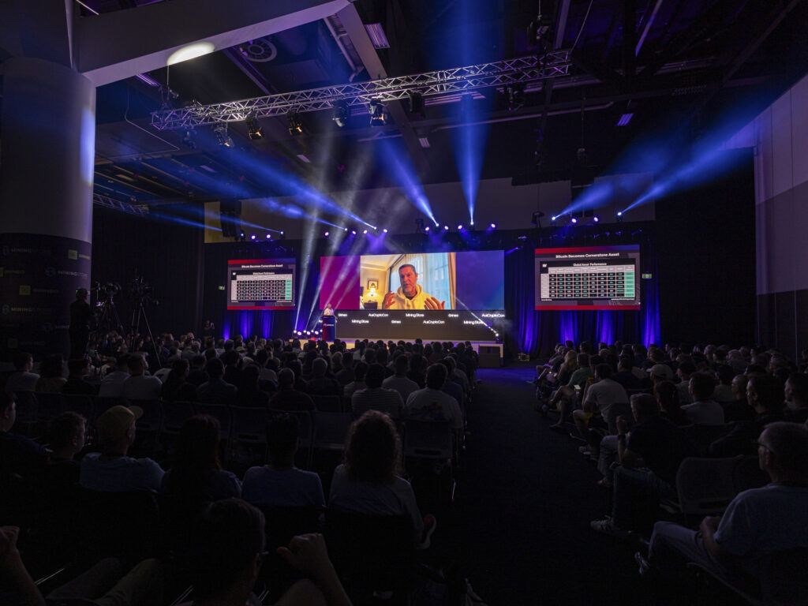

Conferences · Crypto / Web3
CryptoCon Sydney 2026 (AusCryptoCon)
- Dates
- –
- Venue
- ICC Sydney
- Location
- Sydney, Australia
- Format
- In-person
- Category
- Crypto / Web3
- Industry
- Crypto / Web3
- Organiser
- Web3 Group
- Official website
- https://sydneycryptocon.com/
About
Free-entry tickets via the official site. Listed by ICC Sydney as "AusCryptoCon". Dates are local Australian dates (AEST/AEDT, ACST/ACDT or AWST depending on state).
Topics: crypto, Web3, blockchain, digital assets.
No organiser attendance figure found on official pages (23 Nov 2026). Ranked by an estimated size tier 'medium' (our judgement from format, venue and scale, not an official number).
Sources
Venue
- International Convention Centre Sydney — Convention centre · 14 Darling Drive, Sydney, NSW 2000, Australia · 9,000 capacity